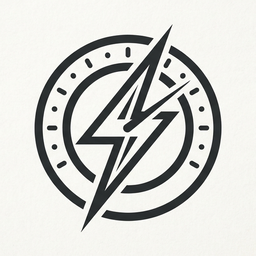

A super-fast desktop dashboard for your Claude usage, with pluggable connectors for GitHub and Slack.
Free and open source (MIT) · Windows 10 & 11, 64-bit · latest release
The quickest way, and it avoids the SmartScreen prompt that browser downloads trigger. Installs to your user profile - no admin rights needed.
Downloads the portable build, verifies its SHA256 against the published checksums, and adds a Start Menu shortcut. Re-run it any time to update.
Use scoop update fastdash for later upgrades.
Token usage overall and per model, efforts used, the current 5-hour window with a reset countdown, weekly totals and cost.
Today's per-contributor PR counts - opened, merged, closed without merge, still open - plus line contributions and the PR list.
Per workspace, the channels that mentioned you today.
Your data stays local. fastdash reads your ~/.claude transcripts on your own machine. Nothing is uploaded anywhere.
Unsigned builds. fastdash is not yet code-signed, so if you download the installer through a browser Windows will show "Windows protected your PC" - choose More info → Run anyway. The terminal and Scoop installs above do not hit this. Every release publishes SHA256SUMS.txt so you can verify what you downloaded.
Requires WebView2, which ships with Windows 11 and Windows 10 21H2 or newer.